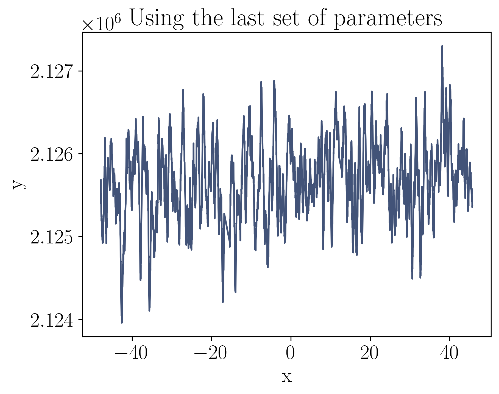
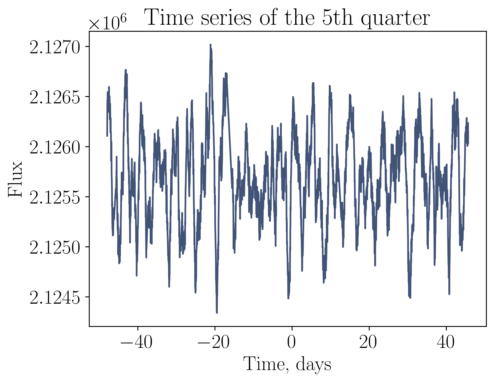

Let's execute the preamble in the current scope. Text output will go here as a brief reminder of the input data.
using NBInclude
@nbinclude("KIC1430163.ipynb")
General info:
Size of the subset: 3518
Mean of the flux: 2.125678e6
Variance of the flux: 209401.3
Variance of the errors: 0.0028263223
Mean of the time differences: 0.026616617260856176
Lomb–Scargle periodogram:
The peak is at 0.2222990081813975.
The relevant estimate of the period is 4.498445621421726.
Let's define a function for calculating the negative log marginal likelihood and an auxiliary function for unpacking the tuple of parameters. See the IDs page on the sidebar for decrypting model IDs.
# Unpack a tuple of parameters
function unpack(θ)
A = θ[1]
l = θ[2]
P = θ[3]
μ = θ[4]
σ²ₙ = θ[5]
return A, l, P, μ, σ²ₙ
end
# Calculate the negative log marginal likelihood
function nlml(θ)
A, l, P, μ, σ²ₙ = unpack(θ)
k = A * stretch(Stheno.EQ(), 1 / l^2) * Stheno.Cosine(P / 2)
g = GP(μ, k, GPC())
return -logpdf(g(t, σ²ₙ), f)
end
;Initial values can be quite important in the optimization process, so it is advisable to set them well. Fortunately, a small manual selection with creating the plot can help in this. Let's try to choose such parameters that a realization of the Gaussian process is similar to the original time series.
# Select the trial parameters
Aₜ = A₀
lₜ = 0.60
Pₜ = P₀
μₜ = μ₀
σ²ₙₜ = 5500
# Create a kernel
EQP = Aₜ * stretch(Stheno.EQ(), 1 / lₜ^2) * Stheno.Cosine(Pₜ / 2)
# Create a Gaussian process
g = GP(μₜ, EQP, GPC())
# Take the values of one of the Gaussian process realizations
# on the time values of the original time series
x = t
y = rand(g(x, σ²ₙₜ))
plot(x, y; color)
title(L"\textrm{A trial plot for the EQP kernel}")
xlabel(L"\textrm{x}")
ylabel(L"\textrm{y}")
θ = [Aₜ, lₜ, Pₜ, μₜ, σ²ₙₜ]
println("Negative log marginal likelihood: ", nlml(θ))
Negative log marginal likelihood: 21253.239040160737
Let's optimize the negative log marginal likelihood function. This process can take quite a lot of time, so the output of the optimizer is very large and therefore placed under the spoiler. Don't mind the failure, by the way. It's because of the prohibition of the BFGS solver from getting out of the pits.
# Collect a parameters vector
θ₀ = [A₀, lₜ, P₀, μ₀, σ²ₙₜ]
# Define the lower and upper boundaries, respectively
θₗ = [209000.0, 0.45, 2.5, 2125650.0, 5400.0]
θᵤ = [210000.0, 0.7, 20.0, 2125750.0, 5800.0]
# Optimize the negative log marginal likelihood function
results = Optim.optimize(
nlml,
θ->Zygote.gradient(nlml, θ)[1],
θₗ,
θᵤ,
θ₀,
Fminbox(BFGS()),
Optim.Options(
outer_iterations = 1,
show_trace = true,
extended_trace = true,
store_trace = false,
);
inplace = false,
)Optimizer output
Fminbox
-------
Initial mu = 0.0884029
Fminbox iteration 1
-------------------
Calling inner optimizer with mu = 0.0884029
(numbers below include barrier contribution)
Iter Function value Gradient norm
0 2.125063e+04 1.517472e+03
* Current step size: 1.0
* time: 0.003721952438354492
* g(x): [-0.0001342239783988097, 1517.4724766781976, 11.980615733681573, 0.0020374753863405216, -0.05181444650741313]
* ~inv(H): [1.0 0.0 0.0 0.0 0.0; 0.0 1.0 0.0 0.0 0.0; 0.0 0.0 1.0 0.0 0.0; 0.0 0.0 0.0 1.0 0.0; 0.0 0.0 0.0 0.0 1.0]
* x: [209401.296875, 0.6, 4.498445621421726, 2.125678e6, 5500.0]
1 2.118301e+04 2.293915e+01
* Current step size: 6.177841401491558e-5
* time: 283.22564792633057
* g(x): [0.0001789820291681817, 22.939151842122765, -2.251126501643076, 0.0023788207794700794, -0.012756325538713845]
* ~inv(H): [0.9999999999999708 2.0954509125695533e-7 1.7983203306260873e-9 1.4239675365650605e-13 -6.446405852480058e-12; 2.0954509125695533e-7 0.0001533932445010322 -0.009521199150692532 2.2848382264104066e-7 2.612935595098244e-5; 1.7983203306260873e-9 -0.009521199150692532 0.9999119813634952 -3.8102990518554216e-10 2.618586600250621e-7; 1.4239675365650605e-13 2.2848382264104066e-7 -3.8102990518554216e-10 1.000000000002416 -1.855732965855668e-11; -6.446405852480058e-12 2.612935595098244e-5 2.6185866002506217e-7 -1.855732965855668e-11 0.9999999993813321]
* x: [209401.2968750083, 0.506252957079535, 4.497705477982777, 2.1256779999998743e6, 5500.000003201014]
2 2.118170e+04 1.197727e+02
* Current step size: 0.4754907083097794
* time: 417.964035987854
* g(x): [0.00020102709478408672, -119.77265091875765, -1.1054004247240892, 0.002486847112245335, -0.009645664495807092]
* ~inv(H): [1.000000008306745 4.246673315813366e-7 -4.2615924298779216e-5 1.128565051805486e-7 -5.822305413603639e-7; 4.246673315813366e-7 5.8691189277449194e-5 -0.0030447488443071033 3.7115447878073976e-6 7.4560824494860654e-6; -4.26159242987792e-5 -0.0030447488443071033 0.6455425567283174 -0.0006213705553879357 0.003259135631996228; 1.128565051805486e-7 3.7115447878073976e-6 -0.0006213705553879357 1.0000015301442495 -7.890059101926092e-6; -5.822305413603639e-7 7.4560824494860654e-6 0.0032591356319962273 -7.890059101926092e-6 1.000040678719187]
* x: [209401.29678762035, 0.49438860710663013, 5.67185208551493, 2.1256779988662745e6, 5500.005783993443]
3 2.118089e+04 4.768274e+01
* Current step size: 2.149324462354699
* time: 627.4083118438721
* g(x): [0.0001682714411606988, 47.68274006699311, -0.389034317079224, 0.0022769936906357523, -0.013630246955298922]
* ~inv(H): [1.0000001738281434 -8.691956275392985e-7 -0.0003430569142627215 2.37038747365291e-6 -1.241105667721683e-5; -8.691956275392985e-7 4.9655959381402465e-5 -0.0006137221490489404 -1.35869439610881e-5 9.952778552445166e-5; -0.0003430569142627216 -0.0006137221490489396 1.1905230898707928 -0.0047205584564972225 0.02473155267802555; 2.3703874736529103e-6 -1.3586943961088107e-5 -0.0047205584564972225 1.0000323140609655 -0.00016921517011054448; -1.2411056677216831e-5 9.952778552445166e-5 0.024731552678025546 -0.00016921517011054448 1.0008860062378553]
* x: [209401.2963636078, 0.5022637217555951, 6.421833851992803, 2.1256779930002335e6, 5500.036179226903]
4 2.118047e+04 4.492775e+01
* Current step size: 2.641287833858467
* time: 828.4240069389343
* g(x): [0.00018424223698134458, -44.92774903687548, -0.24749116655152487, 0.0023566839330327544, -0.011525267337733226]
* ~inv(H): [1.0000011567134592 4.637108502293142e-6 -0.0019379735541578279 1.548394947737877e-5 -8.24646166998446e-5; 4.637108502293142e-6 6.147723174000053e-5 -0.008384569374416635 5.999517765467942e-5 -0.0002936819327668697; -0.0019379735541578279 -0.008384569374416635 3.7073425642088553 -0.026006975850742693 0.13845296212701072; 1.548394947737877e-5 5.999517765467942e-5 -0.026006975850742693 1.000207273226574 -0.0011038584015115984; -8.24646166998446e-5 -0.00029368193276686983 0.13845296212701072 -0.0011038584015115984 1.0058789302390347]
* x: [209401.2956756545, 0.4953828935509348, 7.723371206516484, 2.125677983840325e6, 5500.085091588159]
5 2.118020e+04 4.099281e+01
* Current step size: 4.174958880072026
* time: 1035.4186899662018
* g(x): [0.0001675682011917642, 40.992806466863, -0.035765974457508, 0.0022355171624462277, -0.013532696348074025]
* ~inv(H): [1.0000082024231827 3.206669429502692e-6 -0.01023017376310442 0.00010955864695261435 -0.0005865494459121191; 3.206669429502692e-6 4.9971243458676924e-5 -0.006804907212783838 4.120317358571154e-5 -0.00019144002384602034; -0.01023017376310442 -0.006804907212783838 13.465641781888745 -0.13672217663668876 0.731717000094673; 0.00010955864695261433 4.120317358571151e-5 -0.13672217663668876 1.0014633556726706 -0.007834423744912406; -0.0005865494459121192 -0.00019144002384602034 0.731717000094673 -0.007834423744912406 1.0419436446812955]
* x: [209401.2937696778, 0.49823605951764227, 9.98825325841186, 2.1256779583273763e6, 5500.221475208521]
6 2.118011e+04 1.134161e+01
* Current step size: 1.408754956748677
* time: 1239.5132369995117
* g(x): [0.0001769838787155499, -11.341612595298562, -0.03782807651221892, 0.0022774109746834456, -0.012339626372930903]
* ~inv(H): [1.0000163863338205 1.9005997064546044e-5 -0.018629699581348715 0.000217991580899384 -0.0011724803931684857; 1.9005997064546044e-5 6.258534993603464e-5 -0.021583453073822662 0.0002504346869758693 -0.0013235776856989618; -0.01862969958134872 -0.021583453073822662 21.97101298340653 -0.24800370812953082 1.3331635367464858; 0.000217991580899384 0.00025043468697586927 -0.24800370812953082 1.0029000400301462 -0.01559773643989652; -0.0011724803931684857 -0.0013235776856989618 1.3331635367464858 -0.01559773643989652 1.0838935941755417]
* x: [209401.29282145246, 0.4950036304196906, 11.074084257524252, 2.1256779457558393e6, 5500.289287254933]
7 2.118006e+04 7.374927e+00
* Current step size: 5.741961702800616
* time: 1529.3068039417267
* g(x): [0.0001760037683805096, -7.374927261235463, -0.0010008024103514267, 0.002226466467886018, -0.012427425170335904]
* ~inv(H): [1.0001247014466814 2.4997966300234545e-5 -0.10888220217998318 0.0016491308730022592 -0.008940604222384735; 2.4997966300234545e-5 6.119530304618617e-5 -0.02585819648055446 0.0003292389908819159 -0.0017536742941300686; -0.10888220217998318 -0.025858196480554457 96.87355979986052 -1.440333790676997 7.806028821437801; 0.0016491308730022592 0.00032923899088191583 -1.4403337906769966 1.0218092318325278 -0.11823600514111378; -0.008940604222384733 -0.0017536742941300684 7.806028821437801 -0.11823600514111375 1.6410064274702019]
* x: [209401.28891049756, 0.4942942232143034, 14.53849019262076, 2.125677893976583e6, 5500.56966769773]
8 2.118005e+04 4.942193e-01
* Current step size: 0.9886254751769337
* time: 1665.7256259918213
* g(x): [0.00017458354897315707, 0.4942192695842944, 0.00044563507755254056, 0.0022160005517519797, -0.012603107703520966]
* ~inv(H): [1.0001601278337395 -6.135304918934474e-6 -0.11425608465507918 0.0021036340979424173 -0.011492916577094961; -6.13530491893446e-6 5.3728350610655686e-5 -0.016864529811076993 -7.110567872093456e-5 0.0004864828889537668; -0.11425608465507918 -0.016864529811076993 97.16496142651862 -1.5091652495717705 8.193543131709427; 0.0021036340979424173 -7.110567872093462e-5 -1.50916524957177 1.0276402616844567 -0.15098100018115918; -0.011492916577094961 0.0004864828889537679 8.193543131709427 -0.15098100018115915 1.8248888553234073]
* x: [209401.2886975303, 0.49469254127633655, 14.54490027373458, 2.1256778912498956e6, 5500.585028346193]
9 2.118005e+04 3.715924e-01
* Current step size: 6.630128717316548
* time: 1945.8391768932343
* g(x): [0.00017458442249725022, 0.37159238803982464, 0.0035084421812649584, 0.0021961259898526583, -0.012594174219712295]
* ~inv(H): [1.0028736198720145 7.09309288859931e-5 -0.5811632995944753 0.03680578139724325 -0.20688763137619193; 7.093092888599311e-5 5.495959057448141e-5 -0.02537546031273572 0.0009111493791927427 -0.005064934622992991; -0.5811632995944754 -0.02537546031273573 153.9441996196153 -7.46382701110725 41.824727493872096; 0.03680578139724325 0.0009111493791927427 -7.4638270111072496 1.4714254945530225 -2.6498403313753265; -0.20688763137619193 -0.00506493462299299 41.82472749387208 -2.6498403313753265 15.8949811354221]
* x: [209401.28690626234, 0.4946080182568834, 15.020035355780912, 2.1256778682249854e6, 5500.713945177602]
10 2.117996e+04 1.029147e+01
* Current step size: 159.0130824994447
* time: 2358.3085939884186
* g(x): [0.0001722605028530735, 10.291468727266825, 0.02086011444884652, 0.0006993759433566041, -0.012304529590733502]
* ~inv(H): [1.7582190348221982 -0.0022093365640803264 -4.775185267887815 9.604394533807765 -54.64945058768324; -0.0022093365640803264 6.178242134441208e-5 -0.014698951138338578 -0.027969272701977233 0.15928891981092047; -4.775185267887815 -0.014698951138338585 112.59473895793263 -60.50261611249632 344.12861072734137; 9.604394533807765 -0.02796927270197724 -60.50261611249632 122.65925379349366 -692.2470186880299; -54.64945058768324 0.1592889198109205 344.12861072734137 -692.2470186880299 3939.9178193073935]
* x: [209401.15192408327, 0.4950538461783452, 17.01817398202567, 2.1256761568334983e6, 5510.442702228895]
11 2.117962e+04 3.129157e+01
* Current step size: 1.1184169946378262
* time: 2566.8465349674225
* g(x): [0.00016601042204037993, 31.291570287659532, 0.13006963181792508, -0.006604613192317421, -0.010550228377363776]
* ~inv(H): [3.877560874101473 -0.011390163298619369 2.2532180272040145 36.428498966206945 -207.40974926493487; -0.011390163298619369 9.758148787370122e-5 -0.024692077026734795 -0.14419045588418136 0.8210280331509674; 2.2532180272040163 -0.02469207702673481 30.56935746718105 28.563794637985048 -162.43742708436747; 36.42849896620694 -0.14419045588418133 28.563794637985048 462.1667013888291 -2625.7049470199054; -207.40974926493487 0.8210280331509674 -162.43742708436724 -2625.704947019906 14950.745989958223]
* x: [209400.52884557995, 0.49690002470663164, 19.344494728065886, 2.125668266091886e6, 5555.3521898596155]
12 2.117923e+04 7.371280e+01
* Current step size: 0.5047508242114089
* time: 2838.2387149333954
* g(x): [0.00015409493313493094, 73.71279507537207, 0.027903604323069677, -0.024645334888352625, -0.008323346021797321]
* ~inv(H): [3.0906684759499523 -0.003920179132577705 -0.26848805888077276 26.437703890221357 -150.68505857251466; -0.003920179132577705 4.8922065790617464e-5 -0.0036651544337278977 -0.0495103235186434 0.2825734677290308; -0.268488058880771 -0.0036651544337279116 22.869172015109033 -3.431812805168839 19.340284507969898; 26.43770389022135 -0.049510323518643345 -3.431812805168839 335.31956094948896 -1905.499025167277; -150.6850585725146 0.2825734677290308 19.34028450797024 -1905.4990251672775 10861.634821918868]
* x: [209399.577427155, 0.5008723194732323, 16.957546048290688, 2.12565622337395e6, 5623.929338443183]
13 2.117908e+04 2.036237e+01
* Current step size: 0.953198881281205
* time: 2979.116637945175
* g(x): [0.00016250694065353665, 20.362367811431785, 0.018537074403973938, -0.04789474171041958, -0.006195053135142468]
* ~inv(H): [2.247163474875151 -0.0049385579893297836 -0.15901339123598457 15.741387541845947 -89.8878616578468; -0.0049385579893297836 8.361950663064743e-5 0.002414821054363135 -0.06303084879387799 0.35606418436756837; -0.1590133912359828 0.00241482105436312 23.839639176808525 -2.1440223859638685 11.464454286395316; 15.74138754184594 -0.06303084879387794 -2.1440223859638667 199.6919806235405 -1134.54357083804; -89.88786165784674 0.35606418436756837 11.46445428639565 -1134.5435708380405 6479.563629301444]
* x: [209399.28512402117, 0.49861176174677657, 16.679665247236596, 2.1256525489500226e6, 5644.992897998983]
14 2.117906e+04 2.491397e+00
* Current step size: 0.5499813912714644
* time: 3117.5384747982025
* g(x): [0.00016746385388588688, -2.4913968502239214, 0.013022823379197534, -0.03066817009561674, -0.006233106657532914]
* ~inv(H): [1.6718793731241768 -0.0007042415517616177 -0.21259869888076843 8.47489711565028 -48.42799014972604; -0.0007042415517616177 5.323509616177395e-5 0.004039421194254817 -0.009690167004037825 0.05092508210984059; -0.21259869888076666 0.004039421194254802 25.770355171875927 -3.0467187037315604 15.360569887529543; 8.474897115650272 -0.009690167004037742 -3.0467187037315586 107.93432018665084 -610.8623913502288; -48.427990149726 0.0509250821098407 15.360569887529905 -610.8623913502292 3491.6128228226844]
* x: [209399.4502354795, 0.4972039952794238, 16.392174962914982, 2.125654669832962e6, 5633.088193167364]
15 2.117905e+04 3.027283e+00
* Current step size: 2.6075342812997695
* time: 3321.0381078720093
* g(x): [0.0001670839178257176, -3.027282924192308, 0.006370665958797277, -0.038580526978776376, -0.005872723147512201]
* ~inv(H): [1.7258660236704637 -0.00179022114713374 3.187251415222205 8.64408494687457 -52.239257561673526; -0.0017902211471337403 5.8205145482191394e-5 -0.011726876882445081 -0.021295481771804816 0.12886538442465906; 3.1872514152222067 -0.011726876882445093 75.77405516032022 33.185303690347666 -228.6296505004275; 8.64408494687456 -0.02129548177180473 33.185303690347666 104.47806244224373 -622.1872603288584; -52.2392575616735 0.12886538442465917 -228.62965050042715 -622.1872603288589 3760.5787043345636]
* x: [209399.3427708282, 0.49746575207510435, 15.54942875665092, 2.1256534095940203e6, 5640.818254481166]
16 2.117904e+04 1.744202e+00
* Current step size: 2.9769743217729396
* time: 3534.2188119888306
* g(x): [0.00016630265653516467, 1.7442018479445414, -0.004423382750337408, -0.03627947628927481, -0.0059822838323529]
* ~inv(H): [1.7293943439865882 -0.0013110469054765411 1.6661101362761892 8.931284955041777 -52.531270889359824; -0.0013110469054765416 6.101397890038561e-5 -0.027820442278246725 -0.011393130879569335 0.09372322733879054; 1.666110136276191 -0.027820442278246732 148.81908852444758 -1.6040409055148146 -116.55020866374124; 8.931284955041768 -0.011393130879569249 -1.6040409055148146 114.25442311217954 -643.8462507428083; -52.531270889359796 0.09372322733879065 -116.5502086637409 -643.8462507428087 3784.4190452150033]
* x: [209399.34483646418, 0.4980206910270075, 13.819400489164787, 2.125653705984443e6, 5640.6273967017105]
17 2.117903e+04 2.921093e+00
* Current step size: 3.944491080443629
* time: 3737.7355949878693
* g(x): [0.0001675380371188824, -2.92109296129928, -0.006822411422234752, -0.029576466865754575, -0.006126304748084207]
* ~inv(H): [1.7151597979159032 -0.0011803922174212435 2.0056573231389523 10.044676838355613 -51.71677567252717; -0.001180392217421244 6.0156139160474605e-5 -0.029452318276858236 -0.015049820250368669 0.08517478962325373; 2.0056573231389536 -0.029452318276858243 147.17658425312877 0.3785425486871432 -140.64287160405706; 10.044676838355604 -0.015049820250368582 0.3785425486871503 153.32544098666682 -728.1695380321163; -51.71677567252714 0.0851747896232539 -140.64287160405672 -728.169538032117 3741.1827091925634]
* x: [209399.4203116922, 0.49769755436284513, 13.626518758467505, 2.1256549079140853e6, 5635.147637754332]
18 2.117887e+04 4.239264e+01
* Current step size: 48.96092775858257
* time: 4084.2869238853455
* g(x): [0.00015749868680897867, 42.39264255875064, 0.02365065617756807, -0.024115316380589266, -0.005600178984361796]
* ~inv(H): [3.4959338718578143 -0.0066323806718558 -3.611224185689756 4.2415891547261095 -175.42705328297998; -0.006632380671855802 6.813798362109784e-5 -0.026885162643297843 0.003181914515400383 0.4638533223866773; -3.6112241856897564 -0.02688516264329785 140.321212915381 19.463717532694375 249.44264964698084; 4.241589154726101 0.003181914515400463 19.463717532694375 172.21138525751385 -325.02557271853607; -175.42705328297995 0.4638533223866773 249.44264964698107 -325.02557271853675 12335.3283592976]
* x: [209398.94056083722, 0.5002273562351485, 16.921838165234213, 2.125656414643078e6, 5668.484528913325]
19 2.117853e+04 2.399707e+01
* Current step size: 2.505595745456284
* time: 4295.463807821274
* g(x): [0.0001564697405320692, 23.99707047219385, 0.014517741529160846, -0.015374797103035643, -0.00023595639758034435]
* ~inv(H): [4.540347248552029 -0.0052178710847987815 0.018632727628824952 -6.942431695865914 -246.68867412407482; -0.005217871084798783 6.510560094502948e-5 -0.028489898796491123 0.004698277299021477 0.3645650142403084; 0.018632727628824508 -0.02848989879649113 144.34330666511391 2.5535782456358476 -1.883429654605095; -6.94243169586592 0.004698277299021555 2.5535782456358476 235.85786863233886 447.4177770946153; -246.68867412407474 0.36456501424030835 -1.8834296546048108 447.4177770946144 17196.041408468063]
* x: [209397.6523983023, 0.5012865759097263, 16.139867497259218, 2.1256607664699038e6, 5757.949659377655]
20 2.117845e+04 9.876266e+00
* Current step size: 1.4038011924399005
* time: 4499.833087921143
* g(x): [0.00016277744841960382, -9.87626585777835, -0.0042827306367758744, -0.009157711320902054, 0.0007761870522688587]
* ~inv(H): [4.477294224447722 -0.005994277022732636 -1.0442620733410781 -5.534748438241865 -242.50590526855882; -0.005994277022732638 6.461641933698086e-5 -0.028821310987063177 -0.02764248435766538 0.4243712655790259; -1.0442620733410786 -0.028821310987063184 144.36531558606023 -43.57314112140634 80.30052505901261; -5.534748438241869 -0.027642484357665285 -43.57314112140634 476.4520602075579 308.57571912137007; -242.50590526855873 0.4243712655790258 80.3005250590129 308.57571912136916 16926.165000232726]
* x: [209397.59524455608, 0.49989728755021295, 14.212376467801354, 2.125665796440011e6, 5761.113720079341]
21 2.117841e+04 8.538496e+00
* Current step size: 2.4353284938004416
* time: 4709.982894897461
* g(x): [0.0001633311104004428, -8.538496189259929, -0.006247519012451043, -0.000627304640757814, -0.00038488821983665984]
* ~inv(H): [4.13422924255197 -0.0049572295959502185 0.30075088854272036 -7.95815944825601 -218.10105636703503; -0.00495722959595022 6.300787156336101e-5 -0.031312091135470316 0.01083062736924549 0.3453123098844896; 0.3007508885427199 -0.03131209113547032 140.71740060159777 -1.9304823902575379 -20.835083994032928; -7.958159448256015 0.010830627369245584 -1.9304823902575308 1094.9492367195112 373.10574633796284; -218.10105636703494 0.3453123098844895 -20.835083994032644 373.10574633796193 15208.3656558141]
* x: [209397.77336970865, 0.49973455252962007, 13.901731656519484, 2.1256747218759065e6, 5747.141170649103]
22 2.117840e+04 1.069927e+00
* Current step size: 0.9447150499565191
* time: 4847.2791538238525
* g(x): [0.00016149031707588999, -1.0699272286324306, -0.000748687814484136, 0.00011652762214817494, 9.648811654504558e-5]
* ~inv(H): [3.721365207306774 -0.004193983277130761 0.5829733883688537 -4.6432534173623115 -189.64765747425432; -0.004193983277130765 6.303149895631148e-5 -0.028794733084898598 0.003920960875600885 0.29258194606639354; 0.5829733883688533 -0.028794733084898612 146.96251406843152 -5.852045611405231 -40.559650184919704; -4.643253417362316 0.003920960875600964 -5.852045611405224 1068.7594350751353 144.72259723363356; -189.64765747425423 0.2925819460663934 -40.55965018491953 144.72259723363243 13247.451157084015]
* x: [209397.65049978107, 0.5001907365323888, 14.470919794788976, 2.1256755836327923e6, 5755.588316363647]
23 2.117840e+04 7.580493e-02
* Current step size: 0.9546549631755243
* time: 4992.934558868408
* g(x): [0.00016135388970122758, -0.07580493330637217, -2.445463559844034e-5, 2.257307006987841e-6, -1.5109927487158385e-6]
* ~inv(H): [3.5018620501698035 -0.003973332047534281 -0.09869155311060385 -3.460501365823335 -175.21789031364025; -0.003973332047534284 6.393557521049611e-5 -0.02671983895653545 0.0005774901384812542 0.2763568211589287; -0.09869155311060607 -0.026719838956535465 146.56085775044528 -4.838337489230909 2.129016228745215; -3.4605013658233394 0.0005774901384813375 -4.838337489230902 1066.5093955943462 70.26171543276166; -175.21789031364017 0.2763568211589285 2.1290162287453853 70.26171543276075 12301.489892449583]
* x: [209397.6640444794, 0.5002077967490335, 14.550845493183376, 2.1256754519473254e6, 5754.651050768924]
24 2.117840e+04 3.777351e-03
* Current step size: 1.0140693325222376
* time: 5230.260488986969
* g(x): [0.00016133555091793006, 0.003777350930967094, 1.1816883963983171e-6, 5.969308921123691e-7, 2.3774154615612258e-6]
* ~inv(H): [3.9993889244467735 -0.004992362679888423 -0.42246282980796823 -2.610636754611619 -189.68066480763014; -0.004992362679888423 6.261652760308012e-5 -0.027046891517164138 -0.0012849343273329122 0.2655210162075714; -0.42246282980797134 -0.02704689151716415 146.48370181583928 -5.426786310016939 -0.22053728210245538; -2.6106367546116225 -0.0012849343273328324 -5.426786310016932 1067.9567649428054 44.110734025236184; -189.68066480763005 0.26552101620757124 -0.2205372821023417 44.110734025235274 12241.357339797203]
* x: [209397.66290305083, 0.5002131212115847, 14.55245650412948, 2.125675450104303e6, 5754.71970551663]
25 2.117840e+04 1.513267e-01
* Current step size: 207.79118391100343
* time: 5696.961825847626
* g(x): [0.00016133192503646357, -0.15132673619851, -2.689081793174307e-5, -5.516430604212731e-5, 1.3632768280069305e-5]
* ~inv(H): [432.4583270004066 0.031837116490799455 -0.4646753350483237 401.98656187035016 -771.6008320069304; 0.031837116490799455 6.270166057400623e-5 -0.026846750911692224 0.002860108308050488 0.26472885463759854; -0.46467533504832637 -0.026846750911692235 146.47022772492133 -3.440415088920128 -3.41941330031442; 401.98656187035004 0.00286010830805054 -3.44041508892012 1145.4104046348077 -15.883927913890943; -771.6008320069303 0.2647288546375984 -3.4194133003143063 -15.883927913892308 12245.037360577939]
* x: [209397.626876553, 0.5002069696013902, 14.552662115309994, 2.125675385707532e6, 5754.817451701766]
26 2.117840e+04 5.252277e+00
* Current step size: 1294.6413120350223
* time: 6197.63357591629
* g(x): [0.0001248653420100773, 5.252277078499003, -0.0006068626343951715, -0.0013138701749933744, -0.0004363243192753105]
* ~inv(H): [456369.73836029397 -1.0561935820939081 1313.6349732935012 7147.555868070091 21490.035595969217; -1.0561935820939081 6.074770896626901e-5 -0.025558169935613086 0.015027433674694293 0.2911422927301267; 1313.6349732935012 -0.0255581699356131 145.95562715527416 -11.481105282432376 -16.594337507561125; 7147.555868070091 0.015027433674694331 -11.481105282432381 1069.6448689322692 -180.57216957959133; 21490.035595969217 0.29114229273012654 -16.594337507561068 -180.5721695795927 11941.719140704325]
* x: [209355.84924431943, 0.5004386482854283, 14.303920036100811, 2.1256739478030615e6, 5750.470651470812]
27 2.117839e+04 1.725502e+00
* Current step size: 3.144929964851676
* time: 6413.717266798019
* g(x): [9.406452397689566e-6, 1.725501781521874, -0.0005480125592609887, -0.0003520921185335697, -0.00017836725387451844]
* ~inv(H): [871541.4546733238 0.10412587108286919 43.38187902316963 477.2565903582454 1147.0847360674634; 0.10412587108286897 6.354112794408207e-5 -0.028280785223433916 -0.0013938109951108016 0.24528060211495903; 43.38187902316963 -0.02828078522343393 148.31855229756724 4.838273164455471 25.407413908347348; 477.2565903582454 -0.0013938109951107634 4.838273164455465 1165.837966608643 91.94514095984471; 1147.084736067467 0.24528060211495886 25.407413908347404 91.94514095984334 12669.632877699292]
* x: [209255.6122737168, 0.500262797748754, 14.418587112063078, 2.1256750428952086e6, 5752.831308136555]
28 2.117839e+04 3.191779e-02
* Current step size: 0.934031227251591
* time: 6552.926057815552
* g(x): [-1.9340872864483723e-6, 0.03191779092890101, -3.405853606843444e-5, -4.729762153380963e-6, -3.6049185372286335e-6]
* ~inv(H): [831705.1836633224 -0.10938406136918122 362.5779686456551 1608.3876637126905 5990.110742440589; -0.10938406136918166 6.340140490702464e-5 -0.028373503345666334 -0.00036487280131903416 0.248634270530356; 362.5779686456556 -0.028373503345666344 148.99860629753834 4.8111711071536245 27.17959491477718; 1608.3876637126923 -0.000364872801318996 4.811171107153591 1158.9402890910942 67.68219454347184; 5990.1107424406 0.2486342705303559 27.179594914777237 67.68219454347047 12589.41430266325]
* x: [209248.15742664796, 0.5001854051052014, 14.545527815614575, 2.125675442146416e6, 5754.579928780684]
29 2.117839e+04 2.002509e-03
* Current step size: 0.7434637538849808
* time: 6696.866673946381
* g(x): [2.0449863859532593e-8, -0.0020025088220387843, -6.996298760246142e-6, 1.0722945427742506e-6, 8.362988833322989e-8]
* ~inv(H): [631318.241941184 0.11996844795140338 -0.764770624005223 4.076373222872462 -122.88869907304979; 0.11996844795140293 6.315147877075418e-5 -0.02807313080322802 0.0015996844634391001 0.2556359474417069; -0.7647706240047683 -0.028073130803228027 149.4001501943619 0.723839985592873 16.049062325459555; 4.0763732228751905 0.0015996844634391383 0.7238399855928428 1147.4056130453525 18.79268397389305; -122.88869907303888 0.2556359474417068 16.049062325459612 18.792683973891684 12402.933313157411]
* x: [209249.3868419138, 0.5001836899562038, 14.550585069676417, 2.12567544884634e6, 5754.617309522087]
30 2.117839e+04 1.867205e-05
* Current step size: 1.0101483323064304
* time: 6901.216856002808
* g(x): [-1.3422782834228777e-10, -1.8672047621404175e-5, -1.5001380918727714e-9, -3.9928189443996787e-10, 5.765722008990379e-9]
* ~inv(H): [631247.9016021959 0.12093206253551309 -5.088597002798679 9.598014421579592 -19.147012225910203; 0.1209320625355127 6.317000089669811e-5 -0.028222083122229385 0.0017855864439135262 0.25646865774225786; -5.088597002798224 -0.028222083122229392 150.5006076164547 -0.6531616755925018 7.63458848646604; 9.598014421582775 0.0017855864439135644 -0.653161675592532 1149.1285126364473 29.23167704280381; -19.14701222589929 0.25646865774225774 7.634588486466097 29.23167704280243 12410.067908835783]
* x: [209249.37404376, 0.500183593493004, 14.551582014038633, 2.125675447610177e6, 5754.616874454344]
31 2.117839e+04 3.464953e-07
* Current step size: 0.9907373533275429
* time: 7037.037290811539
* g(x): [1.2225382110733068e-12, 3.464953104437285e-7, -7.389933109891444e-11, -1.118787159269663e-10, -1.625087217571597e-12]
* ~inv(H): [630710.6686078671 0.1170108778939471 0.9788833401382249 36.83340499552307 239.0019229515151; 0.11701087789394671 6.320669182273348e-5 -0.028221154302162228 0.001662049231307625 0.26004582936178516; 0.9788833401386796 -0.028221154302162235 150.46086429737989 -0.7467813587944542 3.5951815043964466; 36.83340499552625 0.0016620492313076632 -0.7467813587944844 1149.338536499507 7.789416029464348; 239.001922951526 0.26004582936178505 3.5951815043965034 7.78941602946297 12329.908367641114]
* x: [209249.37413004893, 0.5001835931714054, 14.551581671089819, 2.125675447610498e6, 5754.616808328915]
Exiting inner optimizer with x = [209249.37404376, 0.500183593493004, 14.551582014038633, 2.125675447610177e6, 5754.616874454344]
Current distance to box: 0.0501836
Decreasing barrier term μ.
* Status: failure (objective increased between iterations)
* Candidate solution
Final objective value: 2.118095e+04
* Found with
Algorithm: Fminbox with BFGS
* Convergence measures
|x - x'| = 2.97e+02 ≰ 0.0e+00
|x - x'|/|x'| = 1.39e-04 ≰ 0.0e+00
|f(x) - f(x')| = 7.22e+01 ≰ 0.0e+00
|f(x) - f(x')|/|f(x')| = 3.41e-03 ≰ 0.0e+00
|g(x)| = 1.32e+00 ≰ 1.0e-08
* Work counters
Seconds run: 7309 (vs limit Inf)
Iterations: 1
f(x) calls: 122
∇f(x) calls: 122
Now let's create a plot similar to the previous one using a set of parameters obtained during the optimization process.
# Take the last set of parameters
θₐ = results.minimizer
# Create a kernel
EQP = θₐ[1] * stretch(Stheno.EQ(), 1 / θₐ[2]^2) * Stheno.Cosine(θₐ[3] / 2)
# Create a Gaussian process
g = GP(θₐ[4], EQP, GPC())
# Take the values of one of the Gaussian process realizations
# on the time values of the original time series
x = t
y = rand(g(x, θₐ[5]))
close()
plot(x, y; color)
title(L"\textrm{Using the last set of parameters}")
xlabel(L"\textrm{x}")
ylabel(L"\textrm{y}")
println("Negative log marginal likelihood: ", nlml(θₐ))
Negative log marginal likelihood: 21180.946475238452
We can now compare this realization of the Gaussian process with the original time series for similarity of characteristics. This is for a test of matching our subjective opinion of similarity with the objective result of the solver.
close()
plot(t, f, color)
xlabel(L"\textrm{Time, days}")
ylabel(L"\textrm{Flux}")
title(L"\textrm{Time series of the 5th quarter}");
This ends the notebook about this model. There are others on the sidebar.
close()